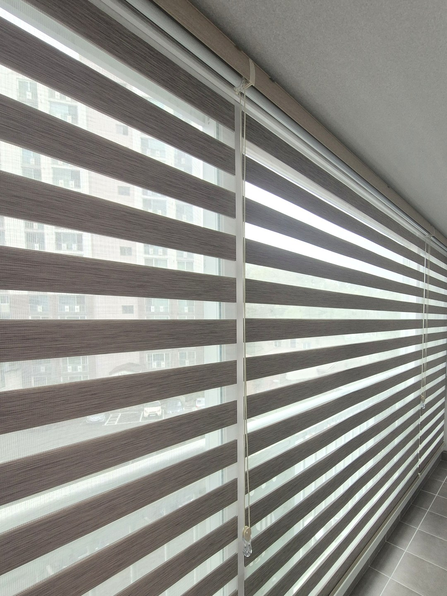
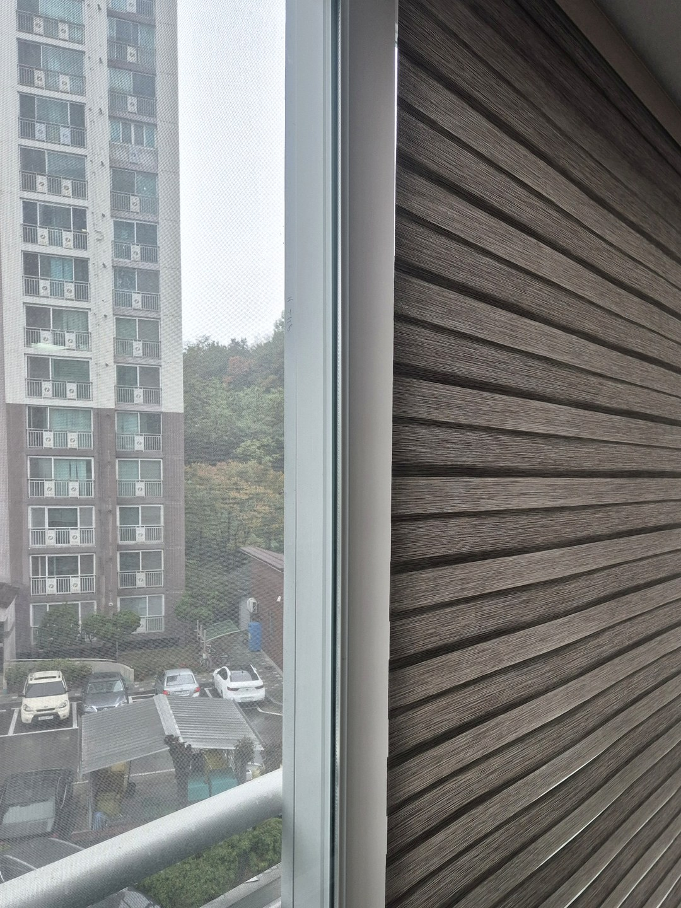
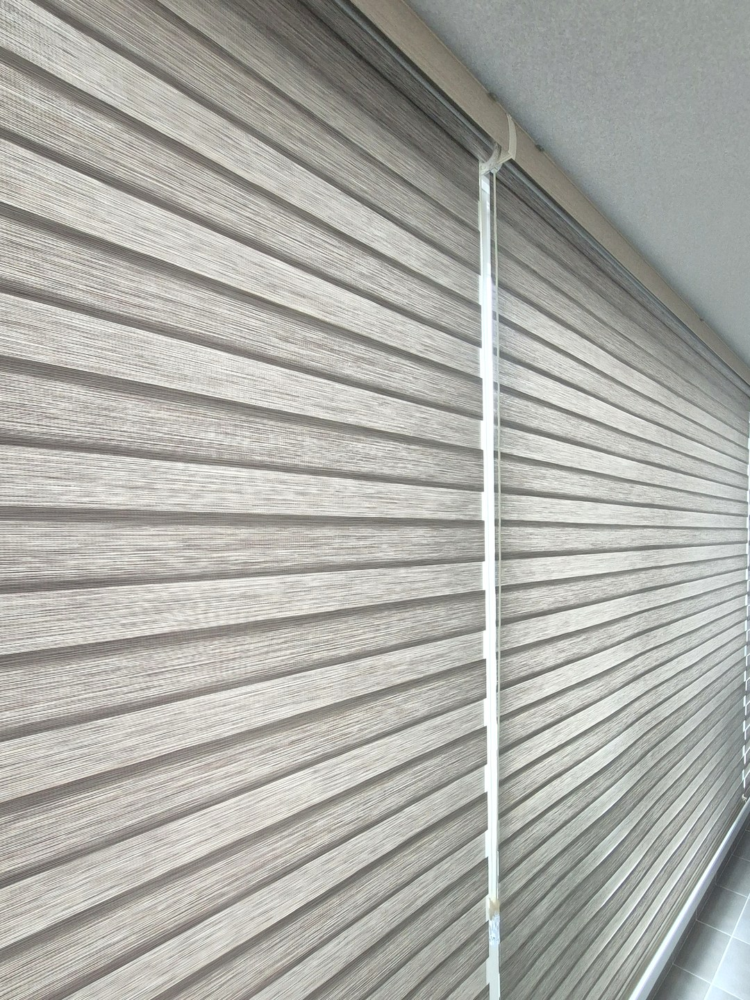

2026년 10월 24일 시공
안동 옥동 삼성2차
베란다 콤비블라인드 설치 시공후기

이번 현장은 안동 옥동 삼성2차 아파트 베란다입니다.
이번에는 따솜이 제품을 준비해 간 현장이 아니었습니다.
고객님이 베란다 블라인드를 인터넷으로 직접 주문하셨는데,
혼자 달기가 어려워 설치만 맡기고 싶다고 연락을 주셨습니다.
긴 베란다 창은 한 폭이 아니라 여러 폭입니다
아파트 베란다 창은 길이가 길어서 블라인드 한 장으로 덮기 어렵습니다.
그래서 보통 몇 폭으로 나눠 주문하고, 설치할 때 나란히 붙여 답니다.
이때 가장 신경 쓰는 것은 높이입니다.
폭마다 위 선이 조금씩 어긋나면 블라인드를 내렸을 때 아랫단이 들쭉날쭉해 보입니다.
이 집도 천장 바로 아래에 여러 폭을 한 줄로 맞춰 달았습니다.
회색 우드결 콤비블라인드
고객님이 고르신 제품은 회색 바탕에 나뭇결 같은 무늬가 들어간 콤비블라인드였습니다.

콤비블라인드는 천 두 겹이 엇갈리는 정도로 빛을 조절합니다.
줄무늬를 어긋나게 두면 바깥이 비쳐 보이고, 겹쳐 두면 시선이 가려집니다.
다 걷어 올리지 않아도 베란다가 환하게 유지되는 이유입니다.
내렸을 때 이음매

여러 폭으로 나눈 블라인드는 폭과 폭 사이에 작은 틈이 생깁니다.
한 장짜리처럼 완전히 막히지는 않지만,
대신 폭마다 따로 올리고 내릴 수 있어 쓰기에는 편합니다.
직접 사신 제품을 맡기실 때 알아 두실 점
직접 주문하신 블라인드는 크기가 이미 정해져 있습니다.
그래서 창과 크기가 조금 다르면 설치할 때 손볼 수 있는 범위가 좁습니다.
폭이 모자라면 양옆이 비고, 길이가 길면 아래가 끌릴 수 있습니다.
제품 자체의 문제는 판매처와 상의하셔야 하는 경우가 많습니다.
설치 요청 전에 준비해 주시면 좋은 것
받으신 상자를 열어 부품이 다 들어 있는지 먼저 봐 주세요.
천장에 달 제품인지, 벽에 달 제품인지도 주문서에서 확인해 주시면 좋습니다.
창 전체 사진과 제품 사진을 함께 보내 주시면 방문 전에 미리 살펴보겠습니다.